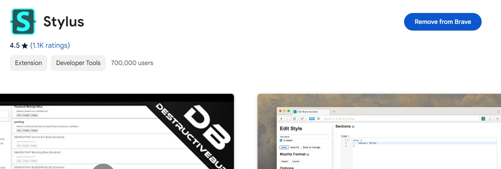
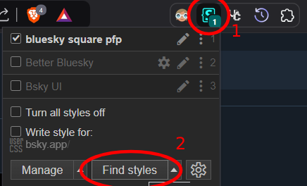
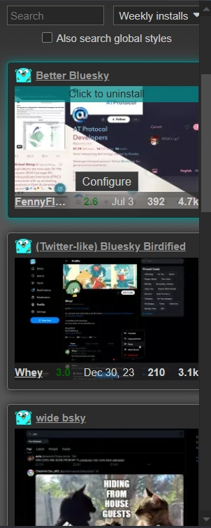
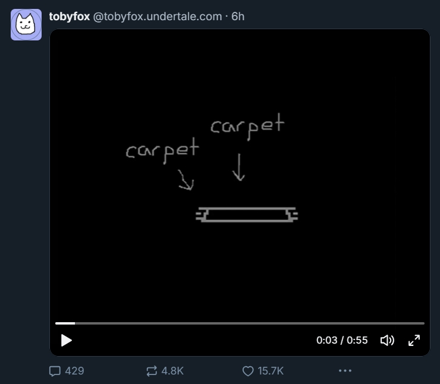
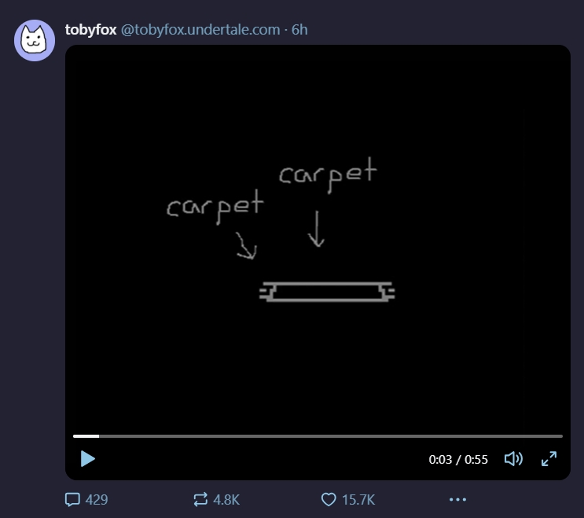
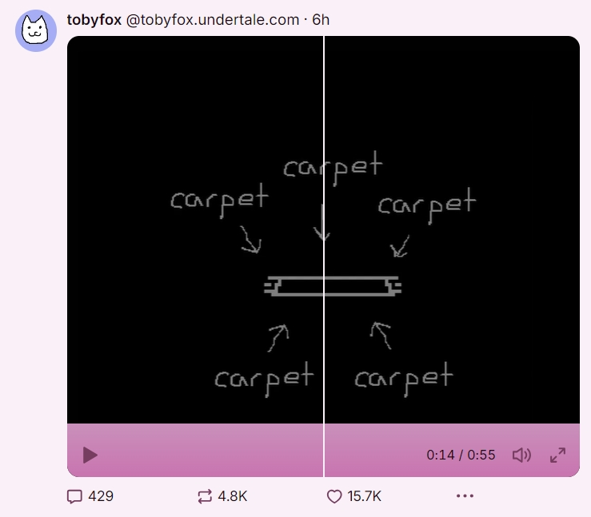

[actualunqiueyui.github.io]
How to change the theme of Bluesky
ATTENTION: As of writing this (October 27th 2024). There are only 9 themes, there will definitely be more in the future, this is due to bluesky being in its early stages
This is very simple to do, all it requires is one extension.

After downloading it, click on the logo on the top right and click "Find Styles"

And then you'll see all sorts of themes you can enable to make your already good experience on bsky even more better by fitting your preference!

Here are some examples
Square pfps
Better Bluesky

Bsky pink

There's more to those themes that aren't shown in those screenshots, but trust me, some are good.
Anyways, you're done... yaaaaaayy